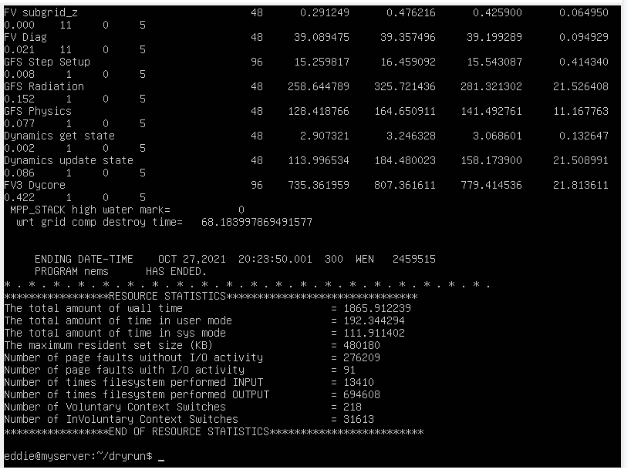

MRW Container Workflow¶
Overview¶
As part of the Advance User Support Sprint 2 Planning deliverables, a minimalistic containerized version of the Medium Range Weather (MRW) Unified Forecasting System (UFS) application was requested.
One of the requirements for this containerized version of the MRW forecasting application is that it should be able to run on a single node. To meet this requirement, we created a container using the UFS weather model configured for atmosphere only and the inline post-processor along with chgres_cubed and other pre-processing utilities. The MRW sample configuration uses low resolution (c48) and a reduced forecast period of three hours, instead of a more typical week-long forecast period.
We anticipate that the primary users will be new users of the UFS weather model and UFS applications. As such, a lot of the ‘moving parts’ were captured in a shell script workflow so that a novice user can simply run a few commands. This script is run inside of either a Docker or Singularity container which has the MRW application pre-installed and was built using the HPC-Stack repository. The container itself is currently a proof of concept and significant work remains to ensure that the process of building containers that are offered to the community are fully in sync with the UFS software in use on the cloud and Tier-1 platforms.
This document will aid novice users in running the UFS MRW application with the intent of helping them become more familiar with the UFS and its applications. The document is broken into different sections so that it is easier for a user to understand what is required to run the MRW Container.
Prerequisites¶
There are a couple of packages, data sets, and a script one must have before running the MRW application container. Below is a list of these items:
Singularity and/or docker installed locally (Singularity is recommended)
The MRW singularity or docker image (Singularity is recommended)
The sample test data (c48.cold.tar.gz)
Workflow script (workflow.sh)
Obtain the Docker or Singularity Image¶
For the MRW application container, the Singularity image is built from docker, so you may choose whichever image you like. However, it is recommended that you use the singularity container as it skips unnecessary steps and has been proven to work.
To obtain a Docker image¶
Obtain the latest MRW docker image from docker hub by doing the following:
docker pull dcvelobrew/docker-gnu-openmpi-dev-ufs
Convert the docker image to a singularity container by running the following command:
Singularity build epic-mrwapp.img docker://dcvelobrew/docker-gnu-openmpi-dev-ufs
NOTE: the image is called epic-mrwapp.img
To obtain the Singularity image¶
Run the command below to get the singularity image:
singularity pull library://dcvelobrew/default/mrwufs-src:latest
NOTE: the image is called mrwufs-src_latest.sif
Getting the Sample Data and Scripts¶
A small low resolution dataset was chosen for this workflow example and can be found here: c48.cold.tar.gz - Google Drive
The Workflow is found here: workflow.sh - Google Drive
Running the Workflow¶
Things to consider:
The image name is different depending on which path you choose.
Docker image name: epic-mrwapp.img
Singularity image name: mrwufs-src_latest.sif
Make sure the c48.cold.tar.gz file, workflow.sh, and mrwufs-src_latest.sif/epic-mrwapp.img are all in the same directory.
The workflow shell script has the Singularity image name hard coded in it.
Once you have verified the conditions above, run the command below:
./workflow.sh
Results
This script will untar the c48 data and run a 3 hour forecast with the MRW app. It will also download a new GFS initial conditions dataset and run chgres and create another 3 hour forecast.
It can take anywhere from 10 mins to up to an hour to complete.
A successful output should look like this:
- 
{kind=link}
Regression Testing¶
Another one of our Sprint Planning deliverables was to ensure the rt.sh can run inside the container. Given that the rt.sh is designed for running a large number of UFS global and limited-area configurations in a full environment, and the simplified containerized version does not support the necessary requirements, only the c48 control case can be executed. Because of this, we simply captured the input datasets and saved it as a tar file called control_48.
Running the regression test c48 is similar to what was done previously and below are the instructions.
Procedure
Place the control_48.tar.gz in the same directory as the mrwufs-src_latest.sif or epic-mrwapp.img file
Untar the control_48 file using this command:
tar xzvf control_48.tar.gz
cd into the control_48 folder
Run the following command based on which container you are using.
Singularity (recommended)
singularity exec -B $PWD:$PWD ../mrwufs-src_latest.sif mpirun -n 8 /home/builder/ufs-weather-model/ufs_model
Docker
singularity exec -B $PWD:$PWD ../epic-mrwapp.img mpirun -n 8 /usr/local/bin/ufs_mode
Notes:
The model runs on 8 nodes instead of 6
The UFS model is located in different locations depending on which image you are using
The control 48 model run took about 2.5 hours to complete on a personal virtual machine.